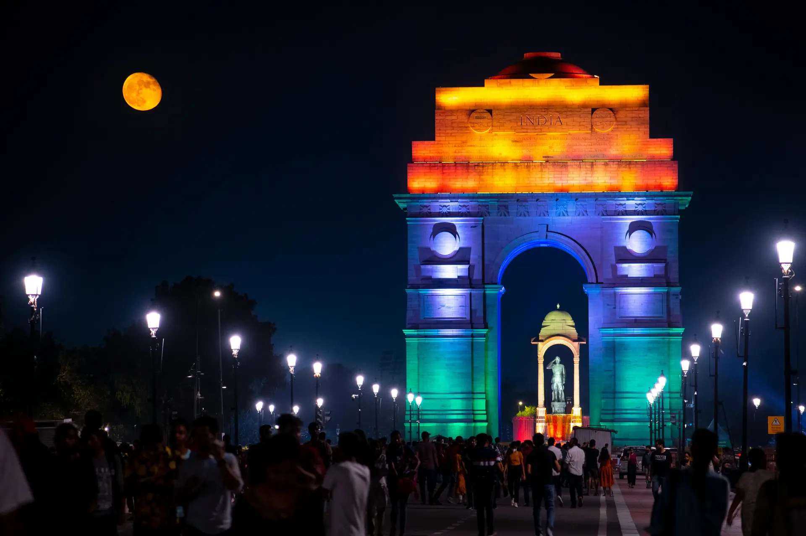

Travel Destination Guide
Travel Destination Guide
Explore some of the world's most iconic travel destination!
Quick Navigation
Delhi,India
- Features the historic India Gate, a national war memorial.
- Rich in history with monuments from Mughal and British eras.
- Serves as the political capital of India.

Paris,France
-
Home to the iconic Eiffel Tower, a symbol of romance and architectural
excellence.
- Known as the global center for art, fashion, and culture.
- Famous for museums like the Louvre and its historic streets.

Kyoto,Japan
-
Famous for the historic Fushimi Inari Shrine with thousands of red torii
gates.
- Known for traditional temples, gardens, and Japanese culture.
- Represents the cultural and spiritual heart of Japan.

Newyork,USA
-
Home to the world-famous Statue of Liberty, symbolizing freedom and
democracy.
-
Known as “The City That Never Sleeps” due to its vibrant lifestyle.
- A global hub for finance, media, and entertainment.

Sydney,Autsraila
- Famous for the architectural marvel Sydney Opera House.
- Known for beautiful beaches like Bondi Beach.
- A major cultural, financial, and tourist destination.

Contact Me
Have questions or suggestions about this travel destination? Feel free to
reach out — I’d love to hear from you!
Phone: +91 12345 67890